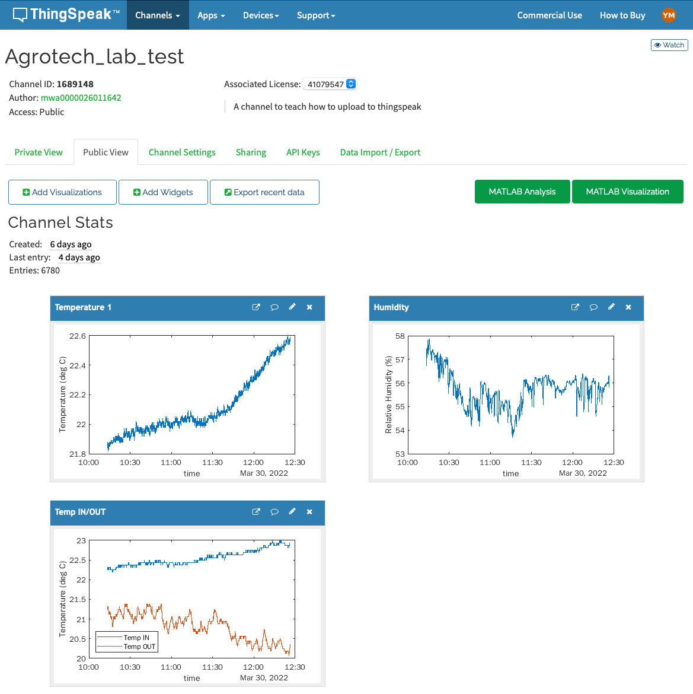

16 Intro to Sensor Modules and Thingspeak

16.1 DS18B20 Temperature Sensor
Pretty accurate temperature sensor. Each sensor has its own unique address, enabling the connection of numerous sensors to only on pin on the Arduino/ESP32.
In this tutorial you can find a lot more information.
Code for finding the sensor’s address:
Download code/*
* Rui Santos
* Complete Project Details https://randomnerdtutorials.com
*/
#include <OneWire.h>
// Based on the OneWire library example
OneWire ds(4); //data wire connected to GPIO 4
void setup(void) {
Serial.begin(115200);
}
void loop(void) {
byte i;
byte addr[8];
if (!ds.search(addr)) {
Serial.println(" No more addresses.");
Serial.println();
ds.reset_search();
delay(250);
return;
}
Serial.print(" ROM =");
for (i = 0; i < 8; i++) {
Serial.write(' ');
Serial.print(addr[i], HEX);
}
}16.2 SHT31 Temperature & Humidity Sensor Using I2C communication
In this tutorial you can find a lot more information.
Code for reading the sensor:
Download code/*
* This program is a modification of
* http://www.esp32learning.com/code/esp32-and-sht31-sensor-example.php
*/
#include <Arduino.h> // Include the Arduino library
#include <Wire.h> // Include the Wire library for I2C communication
#include "Adafruit_SHT31.h" // Include the SHT31 library from Adafruit
Adafruit_SHT31 sht31 = Adafruit_SHT31(); // Create an instance of the SHT31 object
void setup() {
Serial.begin(9600); // Initialize the serial communication with a baud rate of 112500
if (! sht31.begin(0x44)) { // Check if SHT31 is connected and start it with address 0x44
// Print an error message if SHT31 is not found
Serial.println("Couldn't find SHT31");
while (1) delay(1); // Wait indefinitely
}
}
void loop() {
// Read temperature from SHT31 and assign it to "temperature"
float temperature = sht31.readTemperature();
// Read relative humidity from SHT31 and assign it to "humidity"
float humidity = sht31.readHumidity();
if (! isnan(temperature)) { // Check if t is not NaN (not a number)
Serial.print("temp_deg_C:"); // Print temperature label
Serial.print(temperature); // Print temperature value
Serial.print("\t"); // Write a tab space
}
else {
// Print an error message if temperature reading fails
Serial.println("Failed to read temperature");
}
if (! isnan(humidity)) { // Check if h is not NaN (not a number)
Serial.print("rel_hum_%:"); // Print humidity label
Serial.print(humidity); // Print humidity value
}
else {
// Print an error message if humidity reading fails
Serial.println("Failed to read humidity");
}
Serial.println(); // Break line
delay(1000); // Wait 1 second
}16.3 VL53L0X Time-of-Flight Distance Sensor Using I2C communication
In this tutorial you can find a lot more information.
Code for reading the sensor:
Download code#include "Adafruit_VL53L0X.h"
// also on http://www.esp32learning.com/code/vl53l0x-time-of-flight-sensor-and-esp32.php
Adafruit_VL53L0X lox = Adafruit_VL53L0X();
void setup() {
Serial.begin(115200);
// wait until serial port opens for native USB devices
while (! Serial) {
delay(1);
}
Serial.println("Adafruit VL53L0X test");
if (!lox.begin()) {
Serial.println(F("Failed to boot VL53L0X"));
while(1);
}
// power
Serial.println(F("VL53L0X API Simple Ranging example\n\n"));
}
void loop() {
VL53L0X_RangingMeasurementData_t measure;
Serial.print("Reading a measurement... ");
lox.rangingTest(&measure, false); // pass in 'true' to get debug data printout!
if (measure.RangeStatus != 4) { // phase failures have incorrect data
Serial.print("Distance (mm): "); Serial.println(measure.RangeMilliMeter);
} else {
Serial.println(" out of range ");
}
delay(100);
}16.4 Serial read and blink
Download code// Define the built-in LED pin
#define LED_PIN LED_BUILTIN // Most ESP32 boards use GPIO 2 for the built-in LED
void setup() {
// Initialize serial communication at 115200 baud
Serial.begin(115200);
// Wait for the serial monitor to connect
while (!Serial) {
; // Wait for serial port to connect. Needed for native USB port only
}
// Set the LED pin as an output
pinMode(LED_PIN, OUTPUT);
// Print instructions
Serial.println("Enter the number of times you want the LED to blink:");
}
void loop() {
// Check if data is available to read
if (Serial.available() > 0) {
// Read the integer from the serial monitor
int blinkCount = Serial.parseInt();
// Check if the parsed integer is greater than 0
if (blinkCount > 0) {
// Print the received number
Serial.print("Blinking LED ");
Serial.print(blinkCount);
Serial.println(" times");
// Blink the LED the specified number of times
for (int i = 0; i < blinkCount; i++) {
digitalWrite(LED_PIN, HIGH); // Turn on the LED
delay(500); // Wait for 500 milliseconds
digitalWrite(LED_PIN, LOW); // Turn off the LED
delay(500); // Wait for 500 milliseconds
}
// Print done message
Serial.println("Done blinking");
}
}
}16.5 Touch sensor
Download code#include <Arduino.h>
// Define the touch sensor pin
#define TOUCH_PIN D12 // You can change this to another touch pin if needed
void setup() {
// Initialize serial communication at 115200 baud
Serial.begin(115200);
// Wait for the serial monitor to connect
while (!Serial) {
; // Wait for serial port to connect. Needed for native USB port only
}
}
void loop() {
// Read the value from the touch sensor
int touchValue = touchRead(TOUCH_PIN);
// Print the touch sensor value
Serial.print("Touch value: ");
Serial.println(touchValue);
// Check if the touch sensor is activated (value will be lower when touched)
if (touchValue < 30) { // You might need to adjust this threshold value
Serial.println("Touch detected!");
}
// Add a small delay to avoid spamming the serial monitor
delay(100);
}16.6 Control LED with touch sensor
Download code#include <Arduino.h>
// Define the touch sensor pin
#define TOUCH_PIN T0 // You can change this to another touch pin if needed
// Define the built-in LED pin
#define LED_PIN LED_BUILTIN // Most ESP32 boards use GPIO 2 for the built-in LED
void setup() {
// Initialize serial communication at 115200 baud
Serial.begin(115200);
// Wait for the serial monitor to connect
while (!Serial) {
; // Wait for serial port to connect. Needed for native USB port only
}
// Set the LED pin as an output
pinMode(LED_PIN, OUTPUT);
}
void loop() {
// Read the value from the touch sensor
int touchValue = touchRead(TOUCH_PIN);
// Print the touch sensor value
Serial.print("Touch value: ");
Serial.println(touchValue);
// Check if the touch sensor is activated (value will be lower when touched)
if (touchValue < 30) { // You might need to adjust this threshold value
Serial.println("Touch detected!");
digitalWrite(LED_PIN, HIGH); // Turn on the LED
} else {
digitalWrite(LED_PIN, LOW); // Turn off the LED
}
// Add a small delay to avoid spamming the serial monitor
delay(100);
}16.7 Thingspeak
16.8 Basic Code for Uploading Data to Thingspeak
Download code// #include <ESP8266WiFi.h>
#include <WiFi.h>
#include "ThingSpeak.h"
unsigned long myChannelNumber = write_here_the_relevant_number;
const char * myWriteAPIKey = "write_here_the_correct_API_key";
const char* ssid = "wifi_name"; // your wifi SSID name
const char* password = "wifi_password" ;// wifi pasword
const char* server = "api.thingspeak.com";
WiFiClient client;
void setup() {
Serial.begin(115200);
WiFi.disconnect();
delay(10);
WiFi.begin(ssid, password);
Serial.println();
Serial.println();
Serial.print("Connecting to ");
Serial.println(ssid);
ThingSpeak.begin(client);
WiFi.begin(ssid, password);
while (WiFi.status() != WL_CONNECTED) {
delay(500);
Serial.print(".");
}
Serial.println("");
Serial.print("NodeMcu connected to wifi...");
Serial.println(ssid);
Serial.println();
}
void loop() {
ThingSpeak.setField(1,11);
ThingSpeak.setField(2,22);
ThingSpeak.setField(3,33);
ThingSpeak.setField(4,44);
ThingSpeak.writeFields(myChannelNumber, myWriteAPIKey);
Serial.println("uploaded to Thingspeak server....");
client.stop();
Serial.println("Waiting to upload next reading...");
Serial.println();
// thingspeak needs minimum 15 sec delay between updates
delay(20000);
}16.9 Uploading Thermistor Data to Thingspeak
Download code#include <WiFi.h>
// Include the ThingSpeak library
#include "ThingSpeak.h"
// Set the ThingSpeak channel and API key information
unsigned long myChannelNumber = 2557936;
const char* myWriteAPIKey = "KUEIEB7R1B58O9KY";
// Set the WiFi network credentials
const char* ssid = "borneo"; // your wifi SSID name
const char* password = "rainforest"; // wifi password
// Set the ThingSpeak server address
const char* server = "api.thingspeak.com";
// Create a WiFiClient object to connect to the WiFi network
WiFiClient client;
// Set the time to wait between uploading data to ThingSpeak (in milliseconds)
int wait_between_uploads = 10000; // 10 seconds
// Thermistor setup------------------------------------------------------------------
int analog_pin = 32; // Pin into which we connect the input voltage
int val ; // variable to store the value read
float v2; // variable to store the voltage of v2
int r1 = 10000; // R1 value (in the voltage divider)
float v1 = 3.3; // V1 value
int b_val = 4150; // B value of the resistor (from the data sheet)
float r2; // variable to store the resistance of r2 (thermistor resistance)
float t; // variable to store the temperature
int adc_steps = 4095; // the number of increments our ADC has (ESP32 = 12bit)
float r_25 = 10000; // the thermistor resistance at 25C (from the data sheet)
// function to convert resistance to temperature according to the b value
// equation in this link:
// https://www.thinksrs.com/downloads/programs/therm%20calc/ntccalibrator/ntccalculator.html
float resistance_to_temperature(int b, float r, float r_25) {
return b/(log(r/r_25)+(b/298.15))-273.15;
}
void setup() {
// Start the serial communication at 112500 baud
Serial.begin(112500);
// Disconnect any previous WiFi connection
WiFi.disconnect();
delay(10);
// Connect to the WiFi network
WiFi.begin(ssid, password);
Serial.print("Connecting to ");
Serial.println(ssid);
while (WiFi.status() != WL_CONNECTED) {
delay(500);
Serial.print(".");
}
Serial.println("");
Serial.print("ESP32 connected to WiFi: ");
Serial.println(ssid);
Serial.println();
// Initialize the ThingSpeak library with the WiFi client
ThingSpeak.begin(client);
}
void loop() {
val = analogRead(analog_pin); // read the input pin (reading v2)
v2 = (v1/adc_steps)*val; // convert to voltage of v2 according to ADC
r2 = (v2*r1)/(v1-v2);
t = resistance_to_temperature(b_val, r2, r_25);
Serial.print("Temperature: ");
Serial.print(t); // print temperature
Serial.println(" C");
// Set the values to be sent to ThingSpeak
ThingSpeak.setField(1, t);
// Send the data to ThingSpeak
ThingSpeak.writeFields(myChannelNumber, myWriteAPIKey);
// Print a message to the serial monitor indicating that the data has been uploaded
Serial.println("Uploaded to ThingSpeak server.");
// Disconnect the WiFi client
client.stop();
// Wait for the specified amount of time before uploading the next set of data
// thingspeak needs minimum 15 sec delay between updates on a free acount,
// a paid acount can update every 1 sec
Serial.println("Waiting to upload next reading...");
Serial.println();
delay(wait_between_uploads);
}